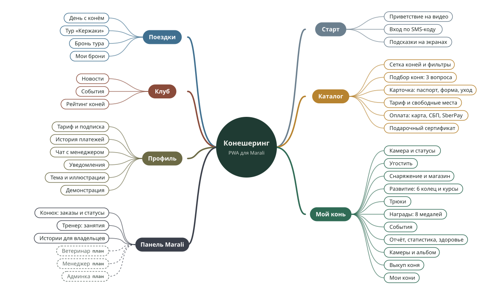
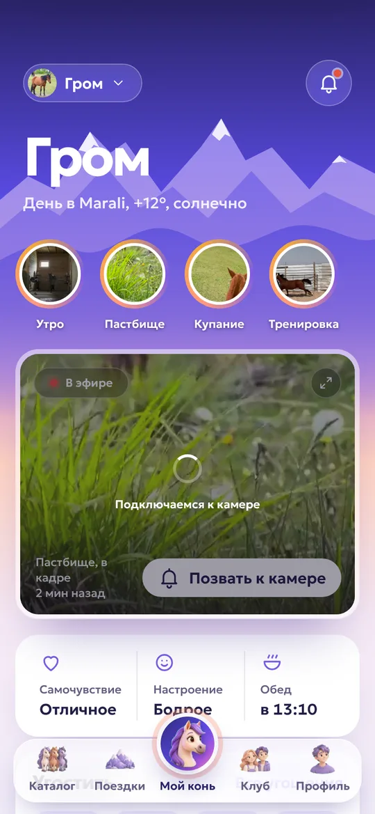
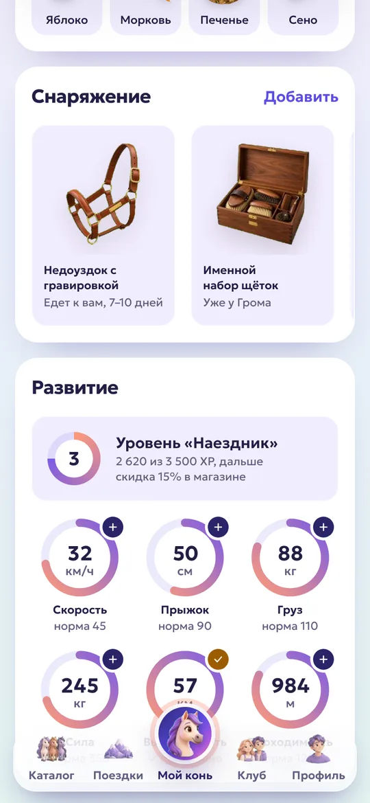
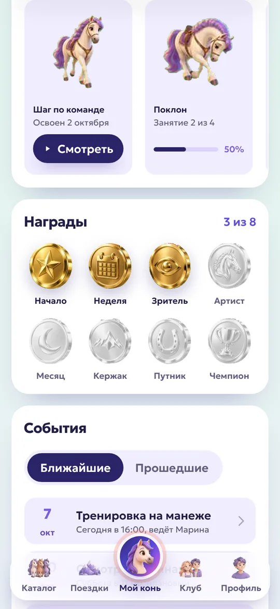
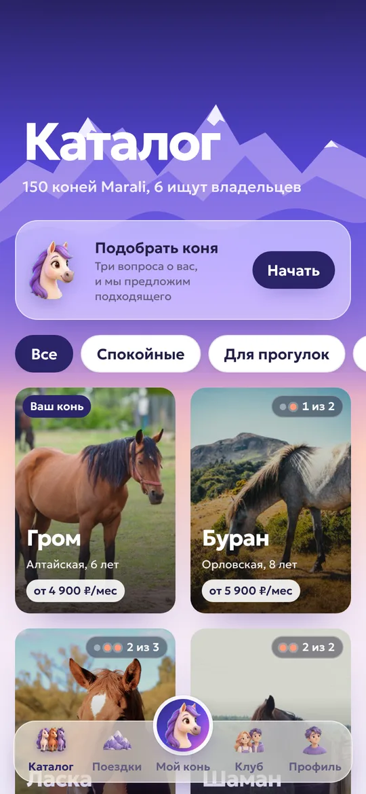
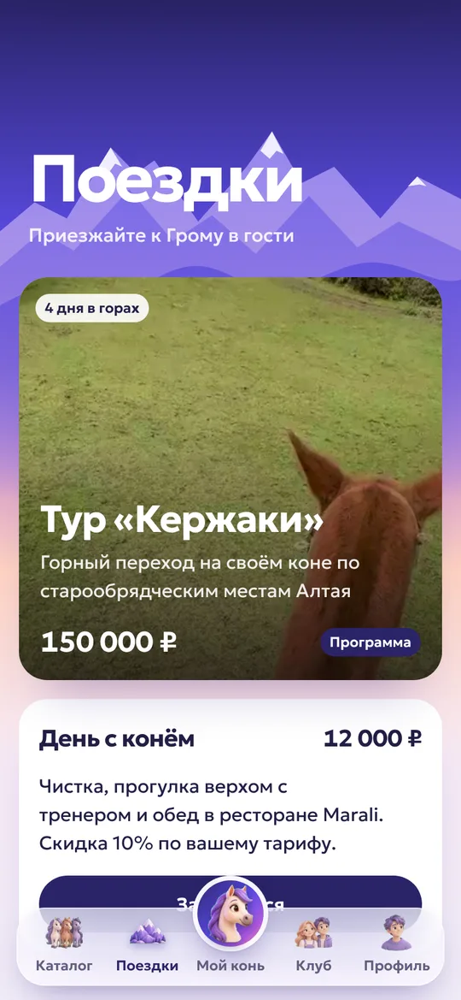
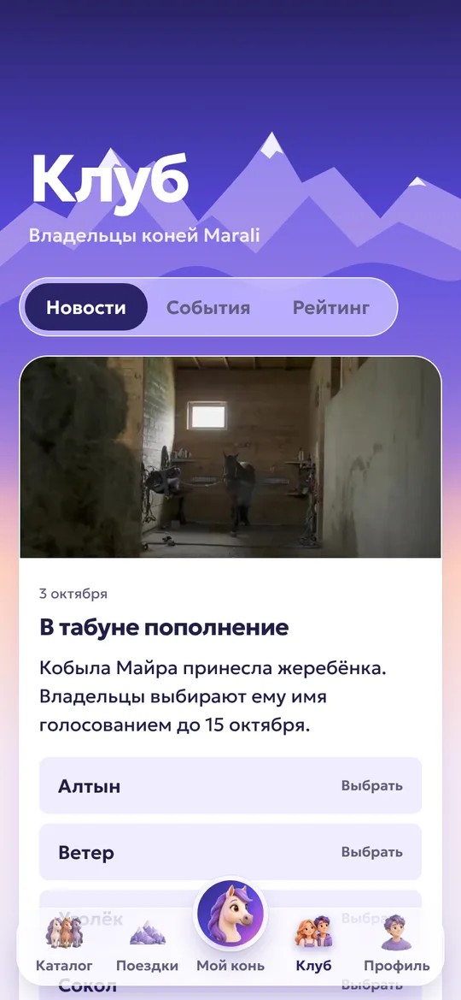
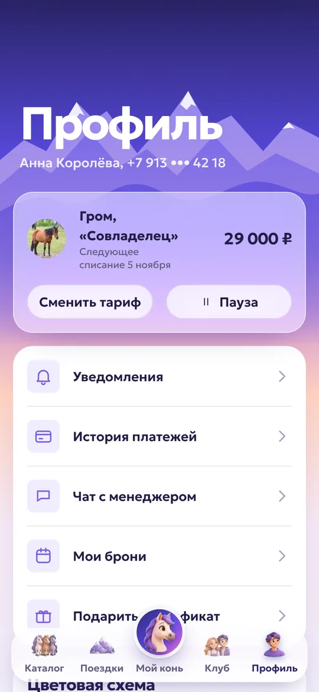

Шесть шагов от идеи до приложения
Каждый шаг опирается на предыдущий. Нажмите на шаг, чтобы перейти к его материалам.
- Шаг 1 · готово
Проработка идеи
Суть сервиса, аудитория, модель развития коня, тарифы и экономика.
- Шаг 2 · готово
Структура приложения и майнд-карта
Разделы, экраны и роли персонала, собранные в одну карту.
- Шаг 3 · готово
Кликабельный прототип и его презентация
Проверка сценариев на телефоне, презентация сервиса и инструкция по прототипу.
- Шаг 4 · дизайн-система готова, айдентика следующая
Цветовые схемы, айдентика, дизайн-система
Стиль «Аврора», четыре цветовые темы и единые правила размеров, шрифтов и цветов.
- Шаг 5 · демо готово
Разработка приложения
Работающее демо со всеми разделами для клиента и экраном персонала.
- Шаг 6
Презентация приложения и шоурил
Инструкция по приложению и минутный ролик. Обновим после брифа с Marali.
Эмоциональная связь с реальной лошадью, а не игра
Состоятельные горожане любят лошадей и природу, но не могут держать коня сами. Конешеринг даёт им своего коня в Marali: живого, с настоящими тренировками, конюхом, который отвечает в чате, и возможностью приехать и прокатиться.
Для владельца
Свой конь в горах Алтая: камера, новости дня, отчёты конюха, тренировки и трюки, награды, визиты и тур «Кержаки».
Для Marali
Регулярный доход с подписок, который покрывает содержание коней, и поток гостей в отель, на визиты и в туры.
Для коня
Каждая тренировка реальная и идёт под контролем ветеринара, который задаёт потолок нагрузки. Базовое кормление входит в подписку.
Подписка на коня и впечатления в Marali
Деньги сервиса дают подписка и офлайн-впечатления, а не мелкие покупки. Цена подписки зависит от коня: базовая цена тарифа умножается на 0,8–1,4.
Друг
- Камеры и лента событий
- Отчёт раз в неделю
- Скидка 5% на визиты
Совладелец
- Конь на 2–4 владельцев
- Ежедневный отчёт и статистика
- Запись на тренировки и трюки
- Скидка 10% на визиты и тур
Владелец
- Камера «глазами коня»
- Курсы тренировок в тарифе
- 2 визита в год
- Скидка 15% на тур
Другие источники дохода
| Что | Как работает | Цена в демо |
|---|---|---|
| Курс тренировок | Одна из 6 характеристик, 3 недели с тренером, до потолка от ветеринара | 7 500 ₽ |
| Трюки | 7 трюков, 3–7 занятий, часть открывается при нужной форме коня | 4 000–12 000 ₽ |
| День с конём | Чистка, прогулка верхом с тренером, обед в ресторане Marali | 12 000 ₽ |
| Тур «Кержаки» | 4 дня верхом по Горному Алтаю, ранняя бронь для владельцев | 150 000 ₽ с человека |
| Магазин | Лакомства, уход, здоровье с одобрения ветеринара, именное снаряжение; конюх вручает и снимает видео | 300–5 500 ₽ |
| Выкуп коня | Стоимость коня минус половина уплаченных подписок, сразу или 12 платежами | по оценке коня |
| Подарочный сертификат | «Совладелец» на 1, 3, 6 или 12 месяцев | скидка до 10% |
| Корпоративные пакеты | Конь компании, выезды команды в Marali | договорная |
Масштаб
Если у 50 из 150 коней будет по 3 совладельца на тарифе «Совладелец», это около 4,35 млн ₽ в месяц только с подписок. Каждый владелец, поехавший в тур, добавляет ещё 127 500–150 000 ₽.
Содержание одного коня обходится примерно в 25–60 тыс. ₽ в месяц.
Награды за достижения
За медали коня владелец получает впечатления, а не скидки на подписку: табличку на денник, именную попону, ужин в ресторане Marali. Для этой аудитории это ценнее, а для сервиса дешевле.
Все цены придуманы для демо и требуют сверки с Marali и проверки на пилоте. Оплата в приложении: карта, СБП, SberPay.
Структура приложения и майнд-карта
Пять вкладок: Каталог, Поездки, Мой конь, Клуб, Профиль. Новый пользователь видит каталог; вкладка «Мой конь» появляется после оплаты. Пунктиром отмечено то, что ещё не сделано.

Нажмите на карту, чтобы открыть её крупно.
Кликабельный прототип и его презентация
Прототип проверяет структуру и логику на телефоне до дизайна: каталог, покупку, развитие коня, поездки, клуб. Внешний вид в нём ранний, он нужен только для сценариев.
Для компьютера: горизонтальная инструкция (PDF, 6,5 МБ).
Для телефона: вертикальная инструкция (PDF, 6,1 МБ).
В презентации и прототипе ещё ранний замысел: отдельная вкладка «Развитие» и тариф «Личный конь», который теперь называется «Владелец».
Цветовые схемы, айдентика и дизайн-система
Рассветное небо над алтайскими горами, шрифт Geologica, мягкие скругления. Все размеры кратны 8, шрифты, цвета и анимации заданы единым набором правил, поэтому новые экраны выглядят как часть одного целого.
Цвета темы «Аврора»
#2A2468
#5B4CE6
#FF9A7A
#F2A93B
#221E45
#625E80
#F1EDFF
#FFFFFF
Шрифты: Geologica
Четыре цветовые темы на выбор в профиле
Отступы 4·8·16·24·32·48·64, скругления 8 / 16 / 24, кнопки высотой 48, крупные области нажатия, видимый фокус для клавиатуры и поддержка системного размера шрифта.
Демо-приложение
Открыть приложение. Оно открывается в браузере телефона и ставится на главный экран как обычное. Чтобы сразу попасть в роль владельца, на первом экране нажмите «У меня уже есть конь».







Каталог
Кони Marali сеткой, подбор коня по трём вопросам, свободные места у совладельцев, карточка с паспортом и характером.
Мой конь
Живая камера с ночным режимом, истории дня от конюха, самочувствие и настроение, «Угостить» и снаряжение с вручением на видео.
Развитие
Шесть характеристик в настоящих единицах относительно нормы породы: скорость, прыжок, груз, сила, выносливость, проходимость. Курсы с тренером, семь трюков, восемь наград.
Поездки
Тур «Кержаки», «День с конём» в Marali и бронирование визитов со скидкой по тарифу.
Клуб
Новости табуна, события, рейтинг владельцев, голосования, например за имя жеребёнка.
Выкуп
Коня можно выкупить: стоимость минус половина уплаченных подписок, сразу или частями. Конь остаётся на постое или уезжает.
Для персонала Marali
В том же приложении есть экран сотрудника: конюх и тренер отмечают события, кормление и тренировки и выкладывают видео. Цель: не больше 5 минут в день на коня. Роли ветеринара, менеджера и администратора запланированы.
Презентация приложения и шоурил
Шоурил, 60 секунд, со звуком.
Шоурил, 60 секунд, со звуком.
Для компьютера: горизонтальная инструкция (PDF, 9,6 МБ) и горизонтальный шоурил.
Для телефона: вертикальная инструкция (PDF, 8,7 МБ) и вертикальный шоурил.
Инструкция и шоурил сняты 10 октября. С тех пор в приложении появились подсказки на экранах, темы и новые тарифы; материалы обновим один раз после брифа с Marali.
План до запуска
От брифа до публичного релиза примерно 8–10 месяцев с ручным пилотом или 6–8 месяцев без него. Часть этапа «Продукт и дизайн» уже сделана заранее: демо-приложение, дизайн-система, инструкция и шоурил. После брифа их останется доработать под ответы Marali.
| Этап | Срок | Что делаем | Результат |
|---|---|---|---|
| 1. Бриф с Marali | 3–4 нед. | Цели и KPI, какие кони участвуют, роли конюхов и тренеров, правила визитов, договор | Согласованное ТЗ |
| 2. Исследование аудитории | параллельно | 15–20 интервью с участниками «Кержаков» и гостями Marali | Портрет клиента и цена |
| 3. Юридика и экономика | параллельно | Оферта подписки, статус «своего коня», условия выкупа, страхование, себестоимость коня | Юнит-экономика |
| 4. Ручной пилот | 6–8 нед. | 10–15 коней, 20–30 платящих из базы тура, менеджер в мессенджере, камера в деннике | Отток, средний чек, что ценят |
| 5. Продукт и дизайн | 4–6 нед. | Путь пользователя, состав MVP, визуальный стиль, прототип | Прототип и ТЗ (во многом готово) |
| 6. Инфраструктура в Marali | параллельно | Камеры и интернет в денниках и на плацу, GPS-трекеры, спутниковая связь для тура | Стабильное видео и данные |
| 7. Разработка MVP | 10–12 нед. | Каталог, подписка и оплата, камеры, отчёты, пуши, тренировки и трюки, визиты и тур, панель персонала | Рабочее приложение |
| 8. Закрытая бета | 4–6 нед. | Перенос пилотных клиентов, проверка пушей на iPhone и Android, аналитика | Метрики удержания |
| 9. Релиз | 2–4 нед. | Продажи через базу тура и гостей Marali, блогеры, подарочные сертификаты | Публичный запуск |
| 10. Развитие | после релиза | Выкуп и всё, что не вошло в MVP; умные уведомления по видео, корпоративные пакеты | Рост среднего чека |
Совет: в MVP брать тренировки, трюки и совместное владение (это главная игровая петля и основа цены), а выкуп отложить, ему нужны юристы и оценка коней.
Что важно продумать заранее
Самый крупный риск не в технике, а в правилах на случай болезни коня и в нагрузке на людей конюшни.
Болезнь и гибель коня
Правила в оферте, страховка и бережный сценарий общения с владельцами.
Благополучие животных
Ветеринар с правом вето, потолок нагрузки, никакого давления вроде «конь грустит, заплатите».
Честность данных
Для каждой цифры указано, откуда она: трекер, конюх или врач. Придуманное вскроется при первом визите.
Связь в горах
Для тура и выгона нужен спутниковый канал или запись с отправкой позже.
Нагрузка на персонал
Сервис держится на конюхах и тренерах, поэтому их экран должен быть простым: до 5 минут в день на коня.
Статус «своего коня» и iPhone
Подписчик не владелец до выкупа, это надо честно сформулировать с юристом. На iPhone пуши работают только после установки приложения на экран.
Что согласовать с Marali
- Дата запуска. К какому сроку нужен сервис, например к сезону туров 2027.
- Состав первой версии. Что из демо входит в MVP: магазин, клуб, сертификаты, выкуп.
- Цены и правила. Тарифы, курсы, трюки, «День с конём», товары, стоимость коней и правила выкупа.
- Кони и нормы. Какие кони участвуют, сколько мест у каждого, нормы пород и потолки от ветеринара, список трюков и наград.
- Тур «Кержаки». Даты заездов 2027 и условия ранней брони для владельцев.
- Камеры и связь. Где на конюшне и плацу можно поставить камеры, какой там интернет.
- Фото и видео. Настоящие снимки коней и Алтая вместо демонстрационных, ролики трюков.
- Персонал. Кто из конюхов, тренеров и ветеринаров будет работать с приложением.